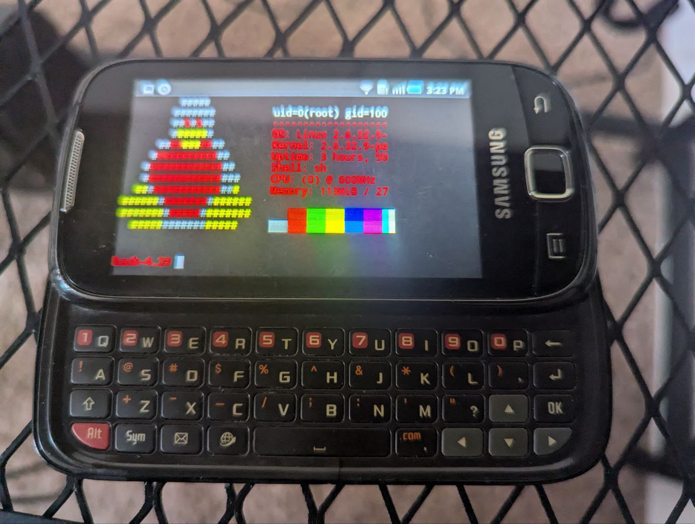

Samsung GT-I5510M

Just look at this beauty! This was the dawn of smartphone technology, a touchscreen phone that also had a slide out keyboard!
I recall one evening well nigh on a decade and a half ago when I used one of these running Windows mobile to finish a presentation I had due the next morning - my laptop suddenly died whilst composing some final touches, but the little phone saved the day! This particular example came to me via a reader and supporter in Canada who sent the phone AND a spare battery, so I felt compelled to give this forgotten little device a purpose.
Some specs I like: A Qualcomm MSM7227 Snapdragon S1 CPU with a whopping 600 MHz! An astounding 240 x 400 pixel screen but it's TFT so yer good. Ancient camera tech exists on these, and even webcam ip works to a degree. Besides WiFi and Bluetooth capabilities, the device also has a Stereo FM radio (RDS), which uses the honest-to-god-wired-headphone-jack as an aerial.
The device arrived to me in very good condition, the former owner having performed a factory reset before shipping which was helpful. I immediately set out to root the device and dumped the rom and entire .apk library. Most are non-working as google services long ago stopped supporting android 2.x devices. No worries, since I plan to just cross compile needed linux applications and run them directly. After dumping the above to a safe place, I proceeded to just yeet ZergRush at it and after a reboot I plugged the device to my lappy. The adb shell then happily let me `su`.
# adb devices -l
* daemon not running; starting now at tcp:5037
* daemon started successfully
List of devices attached
I55102053da97 device usb:1-1 transport_id:1
# adb shell
$ su
# whoami
#
Now one can set up their base of operations. Make a little bootstrap file that contains the following to `/data/local/tmp/bin/bootstrap` :
export HOME=/data/local/tmp
hostname -F etc/hostname
bin/bash
Now running `bin/bootstrap` from your $HOME will give one a bash shell, so little things like terminal escapes work better.
But what's better than that? Running Gentoo on it by shoving a root fs on an sd card and mounting via chroot. This enables me to also mount the same rootfs locally, use `qemu-arm-static` to chroot to it, and build packages far more quickly than at the paltry 600 MHz the phone has to offer. I can then run a temporary binhost and `emerge` the binary package directly to phone. Instructions on how to do this for the samsung and pogoplug to follow (since the same recipe works well for both machines).